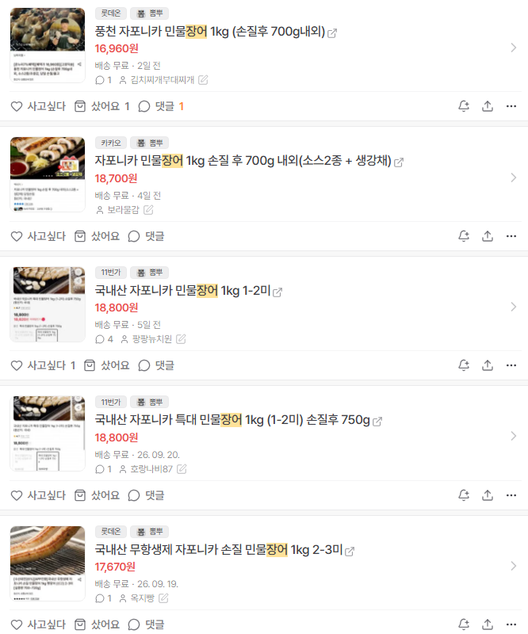
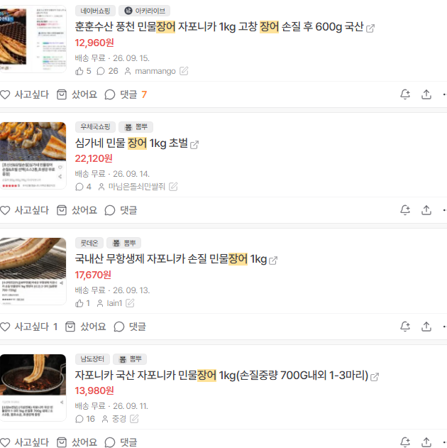

AI로 특가사이트들 서머리해주는곳에서 장어 검색한 결과임.
작년기준 2.4~2.5만이 상시가였는데, 상시가가 6~7천원 저렴해짐.
장어 요즘에 매우매우 저렴해짐.
2만원이면 초벌구이 500~600g도 가능함.
치킨사먹지 말고 장어사먹어라.
참고로 개드립 핫딜에는 업자들이 장난질한 2만원대의 창렬딜만 올라오니 걸러라.
개드립 핫딜보단 그냥 지마켓 네이버 검색이 더쌈.
승희가 업자 걸러내기 못해서 저기 망함. 업자표 창렬딜만있음.
자슥 기름진음식에 약하고만